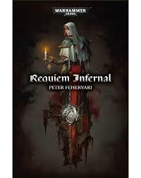

Series
Sisters of Battle Novel Series
Schrijver: James SwallowJaren actief: 2006-2011Aantal boeken: 2
Boeken
Celestine
Schrijver: Andy ClarkPublicatiejaar: 2019 het Verhaal: Met haar machtige vleugels wijd uitgespreid en de Ardent Blame in vuur en flame is Saint Celestine is de levende belichaming van de toorn van de God-Keizer. Haar aureool brandt als een ster op de met smog omhulde en met bloed doordrenkte slagvelden in het 41ste millenium; zijn heilige licht leidt de gelovigen keer op keer naar de overwinning. Terwijl ketters en daimonen haar proberen te verscheuren roept ze vuren van vergelding uit de hoogte om de goddelozen en onrechtvaardigen te kastijden. Als ze zou vallen in een slag, dan zou niemand moeten treuren, want ze is Celestine, de Levende heilige, en de dood is haar plicht. , hoewel het hoge kosten met zich meebrengt. Telkens als ze wordt gedood, wordt Celestine gevangen in een vreselijk rijk van lijden en kwelling. Daar zal haar geloof in de God-Keizer op de proef worden gesteld zodat ze opnieuw kan bewijzen dat ze het leven waard is.
Requiem Infernal
Schrijver: Peter FehervariPublicatiejaar: 2019 Het verhaal: De Adepta Sororitas van de Last Candle waken al eeuwen over hun heilige wereld en streven ernaar om de gekwelde visioenen van hun stichter te ontcijferen. Buitenstaanders zijn niet welkom... maar toch komen ze. Gedecimeerd door een ontmoeting met een dodelijk buitenaards wezen, zijn de overlevenden van een elite Astra Militarum compagnie naar de Candleworld gegaan op zoek naar genezing, begeleid door een vrouw die daar geen vreemde is: Zuster Hospitaller Asenath Hyades, wie de orde al decennia geleden de rug heeft toegekeerd. Terwijl de zoekenden in de buurt van de bastion van de sekte komen, beginnen kwaadaardige krachten iets te doen met de door storm verwoestte torens, maar de verradelijkste schaduwen liggen in hun eigen ziel.